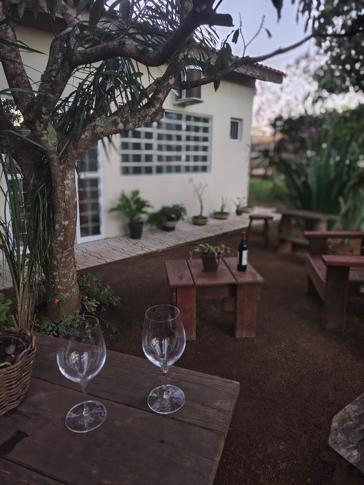
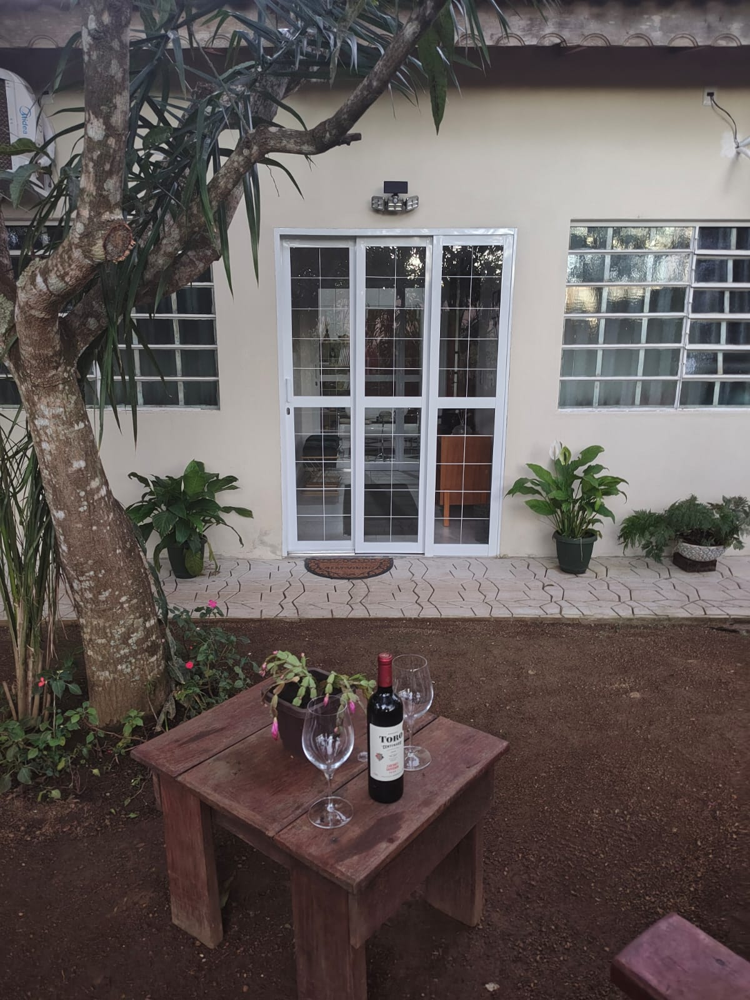
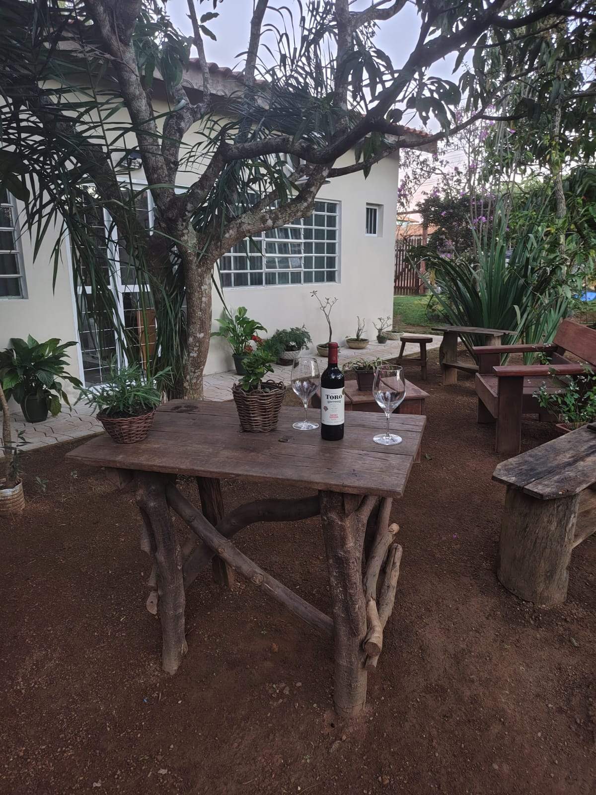
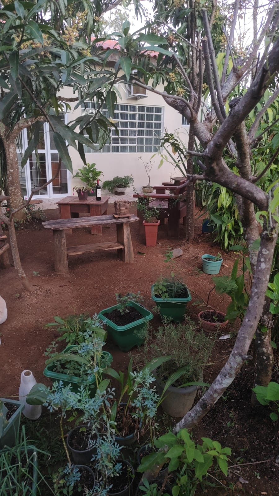
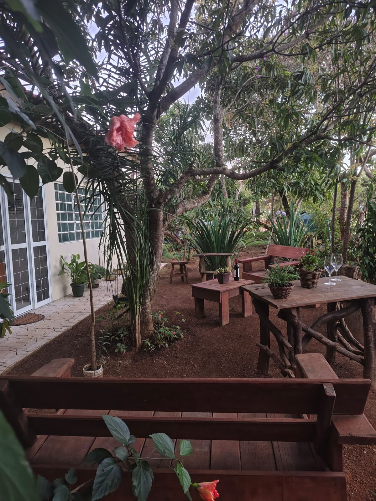

Chapada dos Guimarães · Mato Grosso
Duas suítes confortáveis e privativas, imersas em um jardim exuberante — próximas à rodovia, restaurantes e supermercados, mas com o silêncio e a natureza da Chapada dos Guimarães.



Hospedagem
Duas suítes idênticas, confortáveis e privativas — perfeitas para casais ou duplas de amigos que querem descansar com conforto após um dia de aventura na Chapada.
Quarto amplo com teto de madeira rústico, janelas amplas com vista para o jardim e ar-condicionado split. As duas suítes têm a mesma estrutura e conforto — escolha a disponível e aproveite.
O que está incluído
Localização privilegiada
Apesar do clima de sítio e natureza, as suítes ficam próximas à rodovia principal — com fácil acesso a tudo que você precisar durante a estadia.
Área Comum
Sob a sombra generosa das mangueiras, nosso jardim convida para manhãs lentas, conversas e o canto dos pássaros do cerrado. Bancos rústicos, flores recém-plantadas e espaço de sobra para respirar.
Reservar pelo WhatsApp

Turismo
A Chapada dos Guimarães concentra algumas das mais deslumbrantes paisagens do Brasil — cachoeiras, cavernas, mirantes e cultura viva. Cada botão abre a rota a partir das suítes diretamente no Google Maps.
Cartão-postal da Chapada. Queda de 86 m, localizada dentro do Parque Nacional, logo na entrada da cidade. Visitação gratuita.
Ver no MapsFormações de arenito com formas surreais esculpidas pela erosão. Um dos cenários mais fotográficos do Mato Grosso.
Ver no MapsA maior caverna de arenito do Brasil, com 1.110 m de extensão. Acesso somente com guia credenciado.
Ver no MapsGruta com lagoa de água cristalina de cor azulada, especialmente bela entre junho e setembro quando o sol entra diretamente na caverna.
Ver no MapsVista panorâmica de tirar o fôlego sobre o vale e a cachoeira mais famosa da Chapada. Melhor horário: fim da tarde.
Ver no MapsMarco que marca o centro geográfico da América do Sul, com um obelisco histórico e um mirante. Pôr do sol imperdível.
Ver no MapsFundada em 1811 e tombada pelo IPHAN, é o coração histórico da cidade, na bela Praça Dom Wunibaldo.
Ver no MapsTrilha de 5 km com rios, poços naturais e o famoso Poço do Amor. Parte do trajeto pode ser feita de carro.
Ver no MapsQueda d'água que atravessa uma formação rochosa perfurada naturalmente. Cenário único e trilha acessível.
Ver no MapsPiscinas naturais em cascata com águas translúcidas. Um dos melhores banhos de cachoeira da região.
Ver no MapsUm dos balneários mais populares no trajeto Cuiabá–Chapada. Ótima parada para banho na estrada de chegada.
Ver no MapsCachoeira exuberante em área de mata preservada, com registros de pinturas rupestres nas proximidades.
Ver no MapsGruta que dá acesso à Lagoa Azul. A trilha entre as duas é uma das experiências mais memoráveis da Chapada.
Ver no MapsPiscinas naturais românticas em meio à vegetação densa do cerrado. Perfeita para casais.
Ver no Maps32.630 ha de cerrado preservado. Entrada gratuita, aberto todos os dias das 9h às 16h, a 13 km do centro.
Ver no MapsPraça central com artesanato local, restaurantes e bares com música ao vivo. Noites animadas especialmente nos fins de semana.
Ver no MapsLocalização
As suítes ficam na zona rural de Chapada dos Guimarães, a 69 km de Cuiabá pela MT-251. Acesso fácil de carro — o mapa abaixo mostra a localização exata.
Abrir no Google MapsTranslado
Oferecemos serviço de translado do Aeroporto Internacional de Cuiabá até as suítes — cerca de 1h10 de viagem pela MT-251, com motoristas experientes e veículos confortáveis. Chegue sem preocupações, já no clima da Chapada.
Reserve
Entre em contato pelo WhatsApp para conhecer as suítes e checar disponibilidade. Respondemos rapidinho!